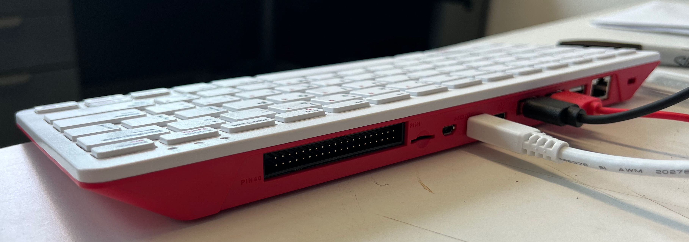

Unpacking and assembling your supplies#
When you open your shipping box, you should see two plastic totes:

Unpacking the computer kit#
Start by opening the “Art bin” tote (the larger one, with the handle):
You should have one of each of the following items in this tote.
A 7” computer monitor connected to the inside of the tote:

Warning
When using your Raspberry Pi with the monitor mounted inside of the tote, please place a heavy item such as a book inside the tote. This will keep it from tipping backwards while you’re using it, which could damage the monitor.
A book that will teach you how to use this computer:
A Raspberry Pi 400 computer. This is a complete computer build into a keyboard. Notice that this looks different from a typical computer keyboard because of all of the connection ports on the back.
A computer mouse:

A USB-C power adapter for the computer:

Two monitor cables bundled together. Keep these two wires bundled together.
A foam monitor cover. This doesn’t stay on the monitor perfectly, but when packing up the tote after you’re done using it, you can place it on the monitor after packing everything else in the tote. When you close the tote, the cover should stay in place and it will protect the screen from being scratched by the items in the tote.
Unpacking the sensor kit#
Next, open the tote with the “Kids Making Sense” sticker on the front:

In this tote, you’ll find the following:
A small carboard box. That box contains a silver bag and in that bag is a small circut board and a wire.

In the carboard box there is also a regtangular metal box. This is a particulate matter sensor, which we’ll call a PM sensor. We’ll learn more about this, and how to connect this to your computer later. Put all of this back in the cardboard box to keep it safe for now.
A breadboard. This is used to build digital circuts without having to solder wires.
Two 330 Ohm resistors. These are easy to lose, so be careful with them.

One LED. The color may vary from what is pictured here.
Five female/male jumper wires.

Five male/male jumper wires.
Five female/female jumper wires.
The fifteen jumper wires will all be bundled together. There’s no difference between the different colored wires, but the colors are helpful to keep track of what is connected to what when we start building circuits.
Your assembled pHAT. This allows us to easy connect the digital circuits that we build to the Raspberry Pi computer.

The assembled pHAT contains three different circuit boards.
Mounted on the circuit board is a Volatile Organic Compound sensor, which we’ll call the VOC sensor.
On a long wire dangling from the side of the pHAT is an atmospheric sensor. This senses temperature, air pressure, and humidity. We’ll call this the TPH sensor (for temperature/pressure/humdity).

The pHAT. This is a board that makes the Raspberry Pi’s GPIO (General Purpose Input/Output) pins available. The GPIO is a big part of what makes the Raspberry Pi computer exciting - this allows you to build your own “physical computing” projects that can interact with the world outside of the computer.

After confirming that you have all of the parts listed above, you can pack all of the “sensor kit” items back into the small tote. We’ll come back to those soon.
Assembling the Raspberry Pi 400#
Connect the monitor and mouse to the Raspberry Pi using the ports on the back. It should look like the following when these are connected.

Warning
When using your Raspberry Pi with the monitor mounted inside of the tote, please place a heavy item such as a book inside the tote. This will keep it from tipping backwards while you’re using it, which could damage the monitor.
This image shows which ports to connect each cable to on the computer:

And this image shows which port to connect each cable to on the monitor:

Once those are connected, you can connect the USB-C power adapter. This will look like the following:
Note
Both monitor cables must be connected to the Raspberry Pi computer before connecting the USB-C power adapter. Otherwise the monitor won’t turn on. If you accidentally connected the USB-C power adapter before connecting one or both of the monitor cables, just unplug the power adapter and then plug it back in. The screen should come on now.
Tip
If you have a larger computer monitor or a TV screen that has an HDMI input, you can connect that to the Raspberry Pi in place of the monitor mounted inside the tote.
Installing the pHAT#
When you’re ready to start experimenting with digital circuits, you can install the pHAT into the Raspberry Pi.
Warning
Disconnect the power from your Raspberry Pi before installing the pHAT, and always disconnect the power from your Raspberry Pi before working on circuits. Otherwise it’s possible to severely damage the Raspberry Pi.
On the back of your Raspberry Pi there is a series of 40 pins. These are the GPIO pins. There may or may not be covered by a small plastic cover over the GPIO pins. Remove the plastic cover if it’s there, and put it in your tote for safe-keeping. The back of your Raspberry Pi should now look like the following.

The pHAT plugs into the GPIO - notice the 40 matching holes on the pHAT. (Your pHAT may look slightly different than the one shown here.)

Being careful to not bend any of the pins, firmly push the holes in pHAT onto the GPIO pins. You have to push fairly hard, but also be careful to not bend the pins at the same time.
After installation, you can plug the Raspberry Pi power back in. It should now look like the following:
Reading data from the sensors using the built-in dashboard#
Now that you have some sensors connected to your computer, you can read data from them using a built-in data dashboard. See Using the built-in sensor dashboard for instructions on how to access the dashboard.